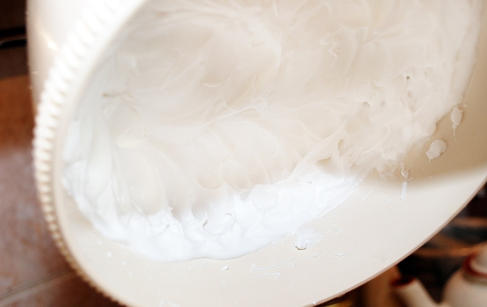
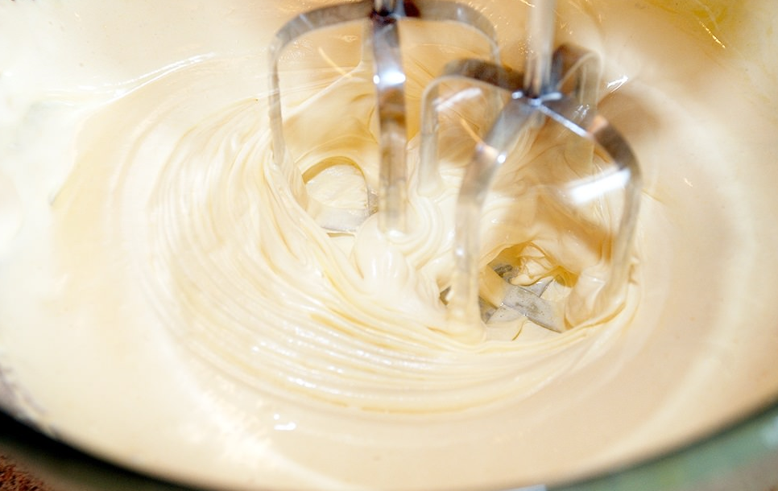
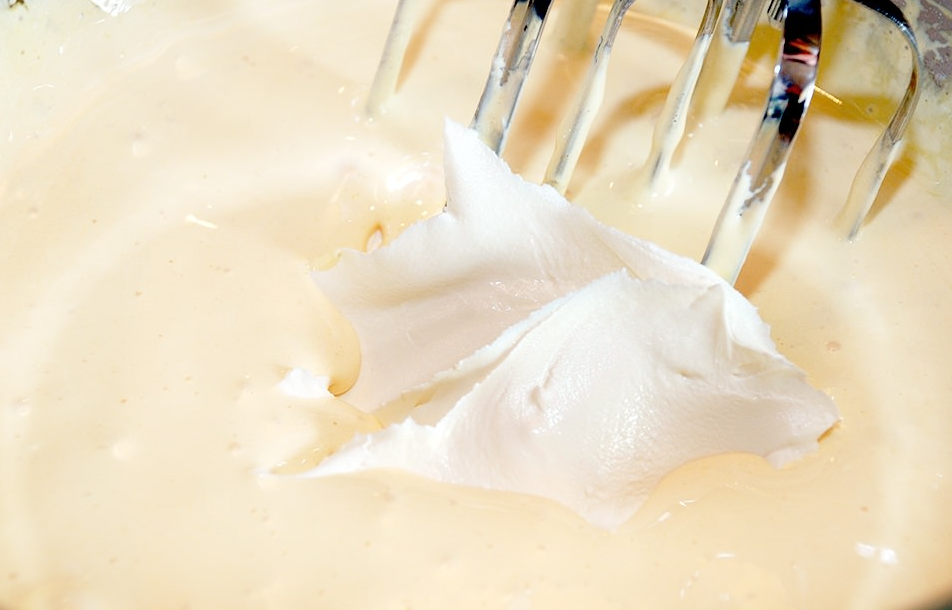
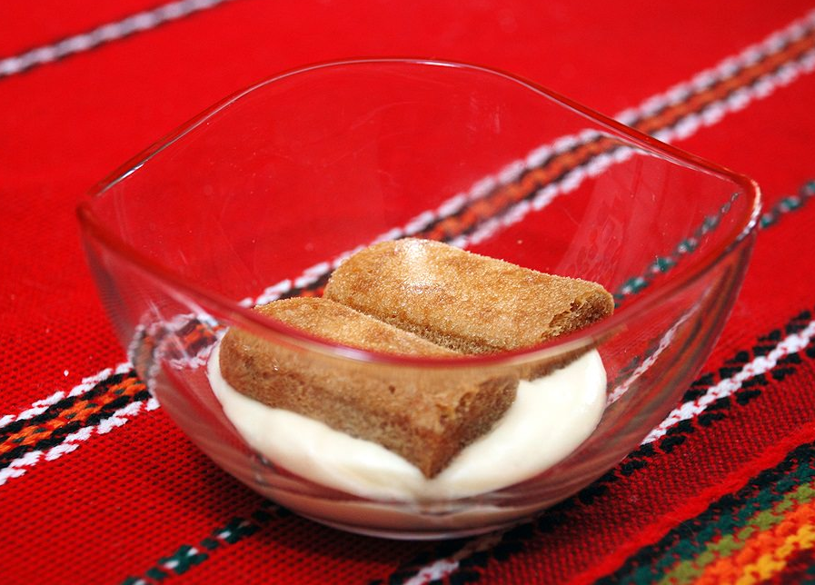
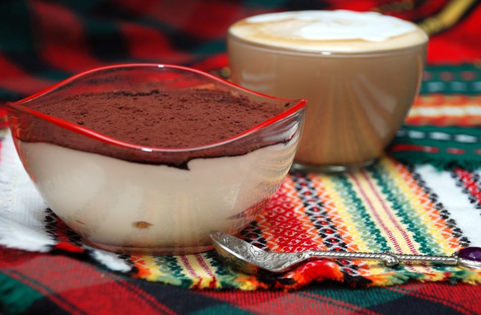

Этот невероятный десерт можно сделать и дома — и поверьте, он будет ничем не хуже приготовленного в итальянском
ресторане.
Говорят, что вы не были в Италии, если не попробовали там тирамису. Название — Tiramisu — дословно переводится
с итальянского как "вознеси меня". Если угодно — для поднятия настроения. Самый популярный десерт в мире,
я не шучу.
Конечно, вряд ли тирамису — это торт, или пирожное, как считают многие. Тирамису — нечто среднее. Это сливочный
сыр маскарпоне, впервые приготовленный более 500 лет в Ломбардии. Это сухое пористое печенье савоярди, пропитанное
алкоголем (коньяк, ром, бренди, ликер). Это кофе, сахар, яйца и какао-порошок.
Большое количество ингредиентов, некоторая их экзотичность для нас, длительный процесс приготовления и длительная
выдержка на холоде заставят приложить немало усилий. Но в итоге вы получаете красивый, нежный, мягкий и невероятно
вкусный десерт.
Даже классический тирамису, приготовленный дома, получится совершенно оригинальным
Иногда готовят торт тирамису, иногда готовят тирамису без яиц, но он никогда не похож сам на себя. Даже классический
тирамису, приготовленный дома, получится совершенно оригинальным. Каждый раз новые впечатления, как от домашнего чизкейка.
Для приготовления тирамису лучше взять уже готовые ингредиенты — савоярди, маскарпоне. И не пытайтеся их
заменейте какими-то аналогами. Это будет дороже, но, во-первых, так вы сэкономите время на приготовление,
во-вторых, на выходе у вас будет тот самый десерт, которым восхищаются и который обожают во всем мире.
Как только соберетесь готовить тирамису, сразу заварите чашку крепкого кофе — натурального, ароматного и без
сахара. Пока он будет остывать, беритесь за основные процессы. Прежде всего — яйца. Берите только охлажденные,
иначе белки могут не взбиться. Кроме того, поскольку яйца используются сырые, брать нужно исключительно свежие
и из источника, заслуживающего доверие.
Приготовление
Белки отделите от желтков — в разную посуду. Это несложно, если не уроните яйцо на пол и не повредите желток. Белки
перелейте в чашу миксера и поместите ее в холодную воду, чтобы они продолжали оставаться холодными. Мастера рекомендуют
перед взбиванием добавлять небольшую щепотку соли.
Взбивайте белки на средней скорости, в процессе осторожно добавьте 2 ст.л. сахарной пудры. Взбивать нужно до
тех пор, пока белки не образуют плотную пену — обычно это занимает 12-15 мин. Если при переворачивании емкости
с белками они не выливаются и остаются на месте, значит, у вас все получилось.

Желтки отдельно взбейте добела с сахарной пудрой, добавляя ее постепенно — до 1 стакана по вкусу, и ванилином
(щепотка ванили или несколько капель ванильной эссенции). Это долго! Взбитые желтки должны быть практически белыми
и похожими на густой крем. Вообще, взбивание — это всегда долго, если вы хотите получить действительно хороший
продукт. И, самое главное, не надо взбивать на высокой скорости, иначе рискуете все испортить.

Сливочный сыр маскарпоне выложите в отдельную посуду и разомните лопаткой. Внимательно с маскарпоне, несколько
раз видел явно совсем не маскарпоне, хотя упаковка была похожа. Да и свежесть сливочного сыра — крайне важна,
всегда обращайте внимание на дату изготовления.
Еще один важный момент. Когда дело дойдет до сыра, лучше выключить миксер. Возьмите маскарпоне и постепенно вмешивайте
его в взбитые с пудрой желтки лопаткой. Осторожно перемешивайте смесь, пока она не станет совершенно однородной.

Далее, продолжая перемешивать крем лопаткой, постепенно в эту массу вмешивайте взбитые белки, тоже лучше вручную,
лопаткой. Нужно получить однородную, без комков и вкраплений, густую массу.
Внимание! Есть жалобы, что иногда при взбивании миксером смесь слоится. Не надо форсировать процесс. Просто отложите
миксер в сторону и перемешивайте смесь лопаткой.
Вот и все, крем для тирамису готов. Временно поставьте его в холодильник.
Кофе охладите до комнатной температуры. В остывший кофе влейте рюмку ликера — Baileys, Cointreau, Kahlua и т.п.
Строго говоря, ликер и бренди, или еще что-нибудь — на ваше усмотрение.
Далее надо принять решение: делать десерт порционным или в виде торта. Как я уже говорил — это вряд ли торт.
Нам больше нравится тирамису в отдельных вазочках. Но тут уже строго — как вам нравится.
Выложите на дно вазочки толстый слой сливочного крема. Надо постараться, чтобы нижний слой по толщине был до
половины высоты формочки.
Если длина печенья савоярди больше, чем размер формы, печенье можно резайте на части, это нормально. Взять одно
(или часть) печенья савоярди и быстро (!) обмакнуть его в смесь кофе и ликера. Важно это сделать действительно
быстро, так как пористое бисквитное печенье практически мгновенно впитывает в себя кофе и ликер, и тут же размокает.
Сразу же покладите савоярди на слой крема. Надо, чтобы савоярди покрыли всю или почти всю площадь крема.

Когда все вазочки будут заполнены кремом и пропитанным печеньем, остатки крема аккуратно выложите поверх печенья.
Да, чуть не забыл, остатки крема стоит съесть, даже если придется их соскребать со стенок посуды пальцем. Крем
для тирамису того стоит! Ни капли не должно пропасть!
Какао-порошок посыпьте на десерт сверху. Это очень удобно делать с помощью чайного ситечка. Количество какао
по вкусу. Пишут, что можно использовайте хороший черный шоколад.
Теперь самый важный момент. Не надо сразу начинать бегать вокруг с ложкой и пробовать. Тирамису — десерт, который
подается охлажденным. Более того, он должен вызреть, выстояться.
Поставьте вазочки с десертом в холодильник минимум на 2 часа. А еще лучше на ночь! И только потом, заварив себе
чашку ароматного кофе, приступайте к небесного вкуса тирамису.
